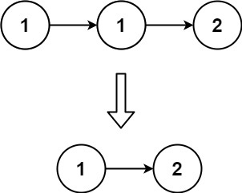
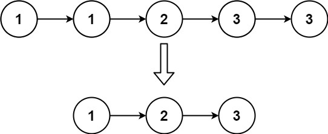
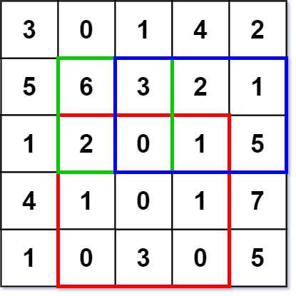
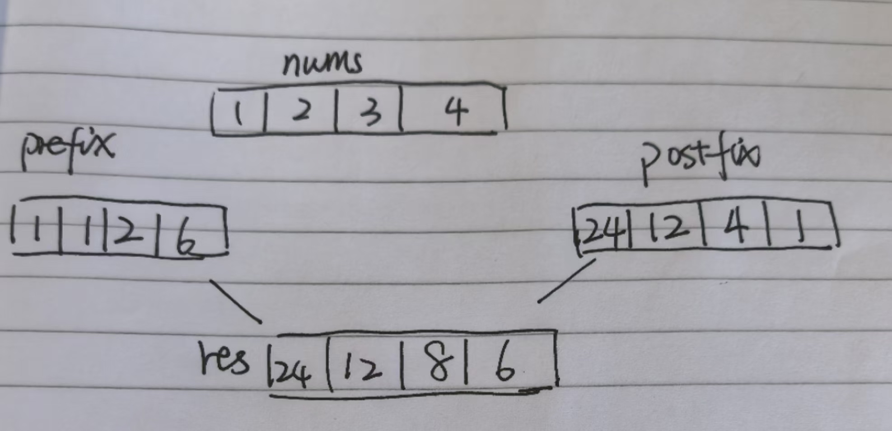

26. 删除有序数组中的重复项
给你一个 非严格递增排列 的数组 nums ，请你 原地 删除重复出现的元素，使每个元素 只出现一次 ，返回删除后数组的新长度。元素的 相对顺序 应该保持 一致 。然后返回 nums 中唯一元素的个数。
考虑 nums 的唯一元素的数量为 k ，你需要做以下事情确保你的题解可以被通过：
更改数组 nums ，使 nums 的前 k 个元素包含唯一元素，并按照它们最初在 nums 中出现的顺序排列。nums 的其余元素与 nums 的大小不重要。
返回 k 。
解答
func removeDuplicates(nums []int) int {
slow, fast := 0, 0
for ; fast < len(nums); fast++ {
if nums[fast] != nums[slow] {
slow++
nums[slow] = nums[fast]
}
}
return slow + 1
}
83. 删除排序链表中的重复元素
给定一个已排序的链表的头 head ， 删除所有重复的元素，使每个元素只出现一次 。返回 已排序的链表 。

输入：head = [1,1,2]
输出：[1,2]

输入：head = [1,1,2,3,3]
输出：[1,2,3]
func deleteDuplicates(head *ListNode) *ListNode {
if head == nil {
return nil
}
slow, fast := head, head
for fast != nil {
if slow.Val != fast.Val {
slow.Next = fast
slow = fast
}
fast = fast.Next
}
slow.Next = nil
return head
}
167. 两数之和 II - 输入有序数组
给你一个下标从 1 开始的整数数组 numbers ，该数组已按 非递减顺序排列 ，请你从数组中找出满足相加之和等于目标数 target 的两个数。如果设这两个数分别是 numbers[index1] 和 numbers[index2] ，则 1 <= index1 < index2 <= numbers.length 。
以长度为 2 的整数数组 [index1, index2] 的形式返回这两个整数的下标 index1 和 index2。
你可以假设每个输入 只对应唯一的答案 ，而且你 不可以 重复使用相同的元素。
你所设计的解决方案必须只使用常量级的额外空间
解答
func twoSum(numbers []int, target int) []int {
i, j := 0, len(numbers)-1
for i < j {
sum := numbers[i] + numbers[j]
if sum == target {
return []int{i + 1, j + 1}
} else if sum < target {
i++
} else {
j--
}
}
return []int{-1, -1}
}
5. 最长回文子串
给你一个字符串 s，找到 s 中最长的
回文子串
示例 1：
输入：s = "babad"
输出："bab"
解释："aba" 同样是符合题意的答案。
示例 2：
输入：s = "cbbd"
输出："bb
解答
for 0 <= i < len(s):
找到以 s[i] 为中心的回文串
找到以 s[i] 和 s[i+1] 为中心的回文串
更新答案
func longestPalindrome(s string) string {
var ans string
for i := 0; i < len(s); i++ {
s1 := Palindrome(s, i, i)
s2 := Palindrome(s, i, i+1)
if len(ans) < len(s1) {
ans = s1
}
if len(ans) < len(s2) {
ans = s2
}
}
return ans
}
func Palindrome(s string, l, r int) string {
for l >= 0 && r < len(s) && s[l] == s[r] {
l--
r++
}
return s[l+1 : r]
}
1. 两数之和
给定一个整数数组 nums 和一个整数目标值 target，请你在该数组中找出 和为目标值 target 的那 两个 整数，并返回它们的数组下标。
你可以假设每种输入只会对应一个答案。但是，数组中同一个元素在答案里不能重复出现。
示例 1：
输入：nums = [2,7,11,15], target = 9
输出：[0,1]
解释：因为 nums[0] + nums[1] == 9 ，返回 [0, 1] 。
func twoSum(nums []int, target int) []int {
// 先对数组排序
sort.Ints(nums)
// 左右指针
lo, hi := 0, len(nums)-1
for lo < hi {
sum := nums[lo] + nums[hi]
// 根据 sum 和 target 的比较，移动左右指针
if sum < target {
lo++
} else if sum > target {
hi--
} else if sum == target {
return []int{lo, hi}
}
}
return []int{}
}
15. 三数之和
给你一个整数数组 nums ，判断是否存在三元组 [nums[i], nums[j], nums[k]] 满足 i != j、i != k 且 j != k ，同时还满足 nums[i] + nums[j] + nums[k] == 0 。请你返回所有和为 0 且不重复的三元组。
func threeSum(nums []int) [][]int {
sort.Ints(nums)
n := len(nums)
res := [][]int{}
// 穷举 threeSum 的第一个数
for i := 0; i < n; i++ {
// 对 target - nums[i] 计算 twoSum
if i > 0 && nums[i] == nums[i-1] {
continue
}
tuples := twoSumTarget(nums, i+1, -nums[i])
// 如果存在满足条件的二元组，再加上 nums[i] 就是结果三元组
for _, tuple := range tuples {
res = append(res, append(tuple, nums[i]))
}
}
return res
}
func twoSumTarget(nums []int, start, target int) [][]int {
l, r := start, len(nums)-1
var ans [][]int
for l < r {
sum := nums[l] + nums[r]
left, right := nums[l], nums[r]
if sum == target {
ans = append(ans, []int{nums[l], nums[r]})
for l < r && nums[l] == left {
l++
}
for l < r && nums[r] == right {
r--
}
} else if sum > target {
r--
} else if sum < target {
l++
}
}
return ans
}
18. 四数之和
给你一个由 n 个整数组成的数组 nums ，和一个目标值 target 。请你找出并返回满足下述全部条件且不重复的四元组 [nums[a], nums[b], nums[c], nums[d]] （若两个四元组元素一一对应，则认为两个四元组重复）
0 <= a, b, c, d < n
a、b、c 和 d 互不相同
nums[a] + nums[b] + nums[c] + nums[d] == target
示例 1
输入：nums = [1,0,-1,0,-2,2], target = 0
输出：[[-2,-1,1,2],[-2,0,0,2],[-1,0,0,1]]
func fourSum(nums []int, target int) [][]int {
sort.Ints(nums)
var ans [][]int
for i := 0; i < len(nums); i++ {
if i > 0 && nums[i] == nums[i-1] {
continue
}
ret := threeSumI(nums, i+1, target-nums[i])
for _, val := range ret {
ans = append(ans, append(val, nums[i]))
}
}
return ans
}
func threeSumI(nums []int, start, target int) [][]int {
ans := [][]int{}
for i := start; i < len(nums); i++ {
if i > start && nums[i] == nums[i-1] {
continue
}
ret := twoSumI(nums, i+1, target-nums[i])
for _, val := range ret {
ans = append(ans, append(val, nums[i]))
}
}
return ans
}
func twoSumI(nums []int, start, target int) [][]int {
l, r := start, len(nums)-1
ans := [][]int{}
for l < r {
sum := nums[l] + nums[r]
left, right := nums[l], nums[r]
if sum == target {
ans = append(ans, []int{nums[l], nums[r]})
for l < r && nums[l] == left {
l++
}
for l < r && nums[r] == right {
r--
}
} else if sum > target {
r--
} else {
l++
}
}
return ans
}
303. 区域和检索 - 数组不可变
给定一个整数数组 nums，处理以下类型的多个查询:
计算索引 left 和 right （包含 left 和 right）之间的 nums 元素的 和 ，其中 left <= right
实现 NumArray 类：
NumArray(int[] nums) 使用数组 nums 初始化对象
int sumRange(int i, int j) 返回数组 nums 中索引 left 和 right 之间的元素的 总和 ，包含 left 和 right 两点（也就是 nums[left] + nums[left + 1] + ... + nums[right] )
示例 1：
输入：
["NumArray", "sumRange", "sumRange", "sumRange"]
[[[-2, 0, 3, -5, 2, -1]], [0, 2], [2, 5], [0, 5]]
输出：
[null, 1, -1, -3]
解释：
NumArray numArray = new NumArray([-2, 0, 3, -5, 2, -1]);
numArray.sumRange(0, 2); // return 1 ((-2) + 0 + 3)
numArray.sumRange(2, 5); // return -1 (3 + (-5) + 2 + (-1))
numArray.sumRange(0, 5); // return -3 ((-2) + 0 + 3 + (-5) + 2 + (-1))
type NumArray struct {
preSums []int
}
func Constructor(nums []int) NumArray {
preSums := make([]int, len(nums)+1)
for i := 1; i < len(nums)+1; i++ {
preSums[i] = preSums[i-1] + nums[i-1]
}
return NumArray{
preSums: preSums,
}
}
func (n *NumArray) SumRange(left int, right int) int {
return n.preSums[right+1] - n.preSums[left]
}
304. 二维区域和检索 - 矩阵不可变
给定一个二维矩阵 matrix，以下类型的多个请求：
计算其子矩形范围内元素的总和，该子矩阵的 左上角 为 (row1, col1) ，右下角 为 (row2, col2) 。
实现 NumMatrix 类：
NumMatrix(int[][] matrix) 给定整数矩阵 matrix 进行初始化
int sumRegion(int row1, int col1, int row2, int col2) 返回 左上角 (row1, col1) 、右下角 (row2, col2) 所描述的子矩阵的元素 总和 。

输入:
["NumMatrix","sumRegion","sumRegion","sumRegion"]
[[[[3,0,1,4,2],[5,6,3,2,1],[1,2,0,1,5],[4,1,0,1,7],[1,0,3,0,5]]],[2,1,4,3],[1,1,2,2],[1,2,2,4]]
输出:
[null, 8, 11, 12]
type NumMatrix struct {
preSum [][]int
}
func Constructor(matrix [][]int) NumMatrix {
m, n := len(matrix), len(matrix[0])
if m == 0 || n == 0 {
return NumMatrix{}
}
preSum := make([][]int, m+1)
for i := 0; i <= m; i++ {
preSum[i] = make([]int, n+1)
}
for i := 1; i < m+1; i++ {
for j := 1; j < n+1; j++ {
preSum[i][j] = preSum[i-1][j] + preSum[i][j-1] + matrix[i-1][j-1] - preSum[i-1][j-1]
}
}
return NumMatrix{preSum: preSum}
}
func (n *NumMatrix) SumRegion(x1 int, y1 int, x2 int, y2 int) int {
return n.preSum[x2+1][y2+1] - n.preSum[x2+1][y1] - n.preSum[x1][y2+1] + n.preSum[x1][y1]
}
1314. 矩阵区域和
给你一个 m x n 的矩阵 mat 和一个整数 k ，请你返回一个矩阵 answer ，其中每个 answer[i][j] 是所有满足下述条件的元素 mat[r][c] 的和：
i - k <= r <= i + k,
j - k <= c <= j + k 且
(r, c) 在矩阵内。
示例 1：
输入：mat = [[1,2,3],[4,5,6],[7,8,9]], k = 1
输出：[[12,21,16],[27,45,33],[24,39,28]]
示例 2：
输入：mat = [[1,2,3],[4,5,6],[7,8,9]], k = 2
输出：[[45,45,45],[45,45,45],[45,45,45]]
解答
func matrixBlockSum(mat [][]int, k int) [][]int {
m, n := len(mat), len(mat[0])
if m == 0 || n == 0 {
return [][]int{}
}
ans := make([][]int, m)
for i := range ans {
ans[i] = make([]int, n)
}
sumMartix := NewSumMatrix(mat)
for i := 0; i < m; i++ {
for j := 0; j < n; j++ {
x1 := max(i-k, 0)
y1 := max(j-k, 0)
x2 := min(i+k, m-1)
y2 := min(j+k, n-1)
ans[i][j] = sumMartix.SumRegion(x1, y1, x2, y2)
}
}
return ans
}
type SumMartix struct {
preSum [][]int
}
func NewSumMatrix(mat [][]int) SumMartix {
m, n := len(mat), len(mat[0])
if m == 0 || n == 0 {
return SumMartix{}
}
preSum := make([][]int, m+1)
for i := range preSum {
preSum[i] = make([]int, n+1)
}
for i := 1; i <= m; i++ {
for j := 1; j <= n; j++ {
preSum[i][j] = preSum[i-1][j] + preSum[i][j-1] - preSum[i-1][j-1] + mat[i-1][j-1]
}
}
return SumMartix{preSum: preSum}
}
func (s *SumMartix) SumRegion(x1, y1, x2, y2 int) int {
return s.preSum[x2+1][y2+1] - s.preSum[x1][y2+1] - s.preSum[x2+1][y1] + s.preSum[x1][y1]
}
724. 寻找数组的中心下标
给你一个整数数组 nums ，请计算数组的 中心下标 。
数组 中心下标 是数组的一个下标，其左侧所有元素相加的和等于右侧所有元素相加的和。
如果中心下标位于数组最左端，那么左侧数之和视为 0 ，因为在下标的左侧不存在元素。这一点对于中心下标位于数组最右端同样适用。
如果数组有多个中心下标，应该返回 最靠近左边 的那一个。如果数组不存在中心下标，返回 -1
示例 1：
输入：nums = [1, 7, 3, 6, 5, 6]
输出：3
解释：
中心下标是 3 。
左侧数之和 sum = nums[0] + nums[1] + nums[2] = 1 + 7 + 3 = 11 ，
右侧数之和 sum = nums[4] + nums[5] = 5 + 6 = 11 ，二者相等。
示例 2：
输入：nums = [1, 2, 3]
输出：-1
解释：
数组中不存在满足此条件的中心下标。
解答
func pivotIndex(nums []int) int {
n := len(nums)
preSum := make([]int, n+1)
for i := 1; i < n+1; i++ {
preSum[i] = preSum[i-1] + nums[i-1]
}
for i := 1; i <= n; i++ {
left := preSum[i-1] - preSum[0]
right := preSum[n] - preSum[i]
if left == right {
return i - 1
}
}
return -1
}
238. 除自身以外数组的乘积
给你一个整数数组 nums，返回 数组 answer ，其中 answer[i] 等于 nums 中除 nums[i] 之外其余各元素的乘积 。
题目数据 保证 数组 nums之中任意元素的全部前缀元素和后缀的乘积都在 32 位 整数范围内。
请不要使用除法，且在 O(n) 时间复杂度内完成此题。
示例 1:
输入: nums = [1,2,3,4]
输出: [24,12,8,6]
示例 2:
输入: nums = [-1,1,0,-3,3]
输出: [0,0,9,0,0]
解答
- 前缀积prefix[i] = nums[0]*...nums[i-1]
- 后缀积postfix[i] = nums[i+1]*....nums[n-1]

func productExceptSelf(nums []int) []int {
res := make([]int, len(nums))
prefix := 1
for i := 0; i < len(nums); i++ {
res[i] = prefix
prefix = prefix * nums[i]
}
postfix := 1
for i := len(nums) - 1; i >= 0; i-- {
res[i] = postfix * res[i]
postfix = postfix * nums[i]
}
return res
}
525. 连续数组给定一个二进制数组 nums , 找到含有相同数量的 0 和 1 的最长连续子数组，并返回该子数组的长度。
示例 1:
输入: nums = [0,1]
输出: 2
说明: [0, 1] 是具有相同数量 0 和 1 的最长连续子数组。
示例 2:
输入: nums = [0,1,0]
输出: 2
说明: [0, 1] (或 [1, 0]) 是具有相同数量0和1的最长连续子数组。
解答
- 首先，我们做一个等价，题目让你找 0 和 1 数量相同的最长子数组，如果我们把 0 视作 -1，就把题目转变成了：寻找和为 0 的最长子数组。
- 那么我们用一个哈希表 valToIndex 存储前缀和到索引的映射，给定任意 preSum[i]，我们都能通过 valToIndex 快速判断是否存在 j，使得 preSum[i] - preSum[j] == 0
func findMaxLength(nums []int) int {
preSum := 0
index := map[int]int{}
index[0] = -1
ans := 0
for i := 0; i < len(nums); i++ {
if nums[i] == 0 {
preSum += -1
} else {
preSum += 1
}
if _, ok := index[preSum]; !ok {
index[preSum] = i
} else {
ans = max(ans, i-index[preSum])
}
}
return ans
}
523. 连续的子数组和
给你一个整数数组 nums 和一个整数 k ，编写一个函数来判断该数组是否含有同时满足下述条件的连续子数组：
子数组大小 至少为 2 ，且
子数组元素总和为 k 的倍数。
如果存在，返回 true ；否则，返回 false 。
如果存在一个整数 n ，令整数 x 符合 x = n * k ，则称 x 是 k 的一个倍数。0 始终视为 k 的一个倍数。
示例 1：
输入：nums = [23,2,4,6,7], k = 6
输出：true
解释：[2,4] 是一个大小为 2 的子数组，并且和为 6 。
示例 2：
输入：nums = [23,2,6,4,7], k = 6
输出：true
解释：[23, 2, 6, 4, 7] 是大小为 5 的子数组，并且和为 42 。
42 是 6 的倍数，因为 42 = 7 * 6 且 7 是一个整数。
示例 3：
输入：nums = [23,2,6,4,7], k = 13
输出：false
解答
- 寻找 i, j 使得 (preSum[i] - preSum[j]) % k == 0 且 i - j >= 2
- 使用哈希表记录 preSum[j] % k 的值以及对应的索引，就可以迅速判断 preSum[i] 是否符合条件了
func checkSubarraySum(nums []int, k int) bool {
index := map[int]int{}
preSum := 0
index[0] = -1
for i := 0; i < len(nums); i++ {
preSum += nums[i]
if j, ok := index[preSum%k]; !ok {
index[preSum%k] = i
} else {
if i-j >= 2 {
return true
}
}
}
return false
}
560. 和为 K 的子数组
给你一个整数数组 nums 和一个整数 k ，请你统计并返回 该数组中和为 k 的连续子数组的个数 。
子数组是数组中元素的连续非空序列。
示例 1：
输入：nums = [1,1,1], k = 2
输出：2
示例 2：
输入：nums = [1,2,3], k = 3
输出：2
解答
- 寻找 i, j 使得 preSum[i] - preSum[j] == k
- count存储preSum[i]的个数
- 遍历过程中边存储边遍历
func subarraySum(nums []int, k int) int {
preSum := make([]int, len(nums)+1)
cnt := map[int]int{}
cnt[0] = 1
ans := 0
for i := 1; i < len(nums)+1; i++ {
preSum[i] = preSum[i-1] + nums[i-1]
need := preSum[i] - k
if val, ok := cnt[need]; ok {
ans += val
}
cnt[preSum[i]]++
}
return ans
}
325. 和等于 k 的最长子数组长度
给定一个数组 nums 和一个目标值 k，找到和等于 k 的最长连续子数组长度。如果不存在任意一个符合要求的子数组，则返回 0。
示例 1:
输入: nums = [1,-1,5,-2,3], k = 3
输出: 4
解释: 子数组 [1, -1, 5, -2] 和等于 3，且长度最长。
示例 2:
输入: nums = [-2,-1,2,1], k = 1
输出: 2
解释: 子数组 [-1, 2] 和等于 1，且长度最长。
解答
- preSum[i] - preSum[j] == k 且 i - j 尽可能的大
- preSum[i] - preSum[j] == k 其实就是 preSum[j] == preSum[i] - k
func maxSubArrayLen(nums []int, k int) int {
index := map[int]int{}
ans := 0
preSum := 0
index[0] = -1
for i := 0; i < len(nums); i++ {
preSum += nums[i]
if _, ok := index[preSum]; !ok {
index[preSum] = i
}
need := preSum - k
if j, ok := index[need]; ok {
ans = max(ans, i-j)
}
if preSum == k {
ans = max(ans, i+1)
}
}
return ans
}
974. 和可被 K 整除的子数组
给定一个整数数组 nums 和一个整数 k ，返回其中元素之和可被 k 整除的（连续、非空） 子数组 的数目。
子数组 是数组的 连续 部分。
示例 1：
输入：nums = [4,5,0,-2,-3,1], k = 5
输出：7
解释：
有 7 个子数组满足其元素之和可被 k = 5 整除：
[4, 5, 0, -2, -3, 1], [5], [5, 0], [5, 0, -2, -3], [0], [0, -2, -3],
解答
func subarraysDivByK(nums []int, k int) int {
preSum := 0
index := map[int]int{}
index[0] = 1
ans := 0
for i := 0; i < len(nums); i++ {
preSum += nums[i]
val := preSum % k
if val < 0 {
val += k
}
if num, ok := index[val]; ok {
ans += num
index[val]++
} else {
index[val] = 1
}
}
return ans
}
1124. 表现良好的最长时间段
给你一份工作时间表 hours，上面记录着某一位员工每天的工作小时数。
我们认为当员工一天中的工作小时数大于 8 小时的时候，那么这一天就是「劳累的一天」。
所谓「表现良好的时间段」，意味在这段时间内，「劳累的天数」是严格 大于「不劳累的天数」。
请你返回「表现良好时间段」的最大长度。
示例 1：
输入：hours = [9,9,6,0,6,6,9]
输出：3
解释：最长的表现良好时间段是 [9,9,6]。
示例 2：
输入：hours = [6,6,6]
输出：0
解答
- hours[i] 以 8 作为分界线，那么我们就要条件反射地想到对数据进行「归一化」处理，比如把所有大于 8 的元素视为 +1，把所有小于 8 的元素视为 -1，这样一来，这道题就改造成了：计算数组中元素和大于 0 的子数组的最大长度
func longestWPI(hours []int) int {
preSum := 0
index := map[int]int{}
index[0] = -1
ans := 0
for i := 0; i < len(hours); i++ {
if hours[i] > 8 {
preSum += 1
} else {
preSum += -1
}
if _, ok := index[preSum]; !ok {
index[preSum] = i
}
if preSum > 0 {
ans = max(ans, i+1)
} else {
if j, ok := index[preSum-1]; ok {
ans = max(ans, i-j)
}
}
}
return ans
}